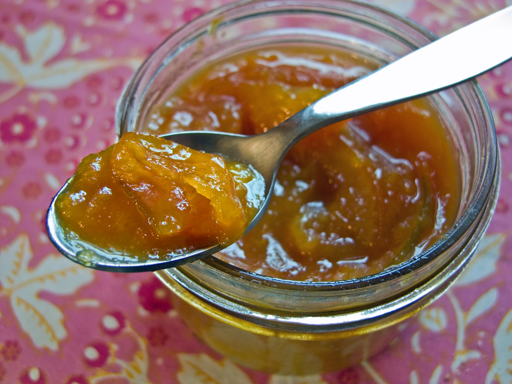

Orange Jam
Description
This jam is a traditional topping for the Polish mazurek, but can be used as a generic sweet spread.
Ingredients
- Four medium size oranges
- One lemon
- One and a half cups of sugar
Steps
- Zest all fruit
- Peel off the albedo (the white part under the skin).
- Blend the fruit (not too much, it doesn’t need to become an even mush, just cut up into small pieces).
- Combine the blended fruit, zest, and sugar in a pot.
- Bring to boil and boil for 30-40 minutes on low heat. The mixture will thicken as water evaporates. Note that it will thicken even further once it cools, so don’t boil for too long - it is expected to be still a little runny at the end of boiling.